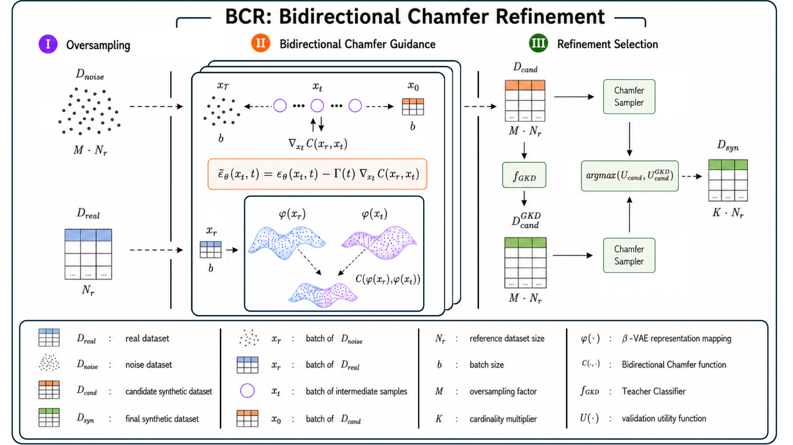

Refine the samples, not the model
Diffusion models set the state of the art for synthetic tabular data, yet models trained on their output still fall short of models trained on the real records. Work on this gap has gone into new architectures and retraining. TARDIS leaves a pre-trained TabDiff backbone untouched and refines what it generates: it oversamples a candidate pool, steers reverse diffusion toward the real-data manifold, and keeps the candidates that best match it. Across 15 benchmarks the result beats real-data training at the cardinality the search selects.

Bidirectional Chamfer Refinement
One functional drives both refinement levels. For a representation map φ and two sample sets, the symmetric Chamfer functional adds a fidelity term (synthetic to real) and a coverage term (real to synthetic):
φ is either the identity on z-scored features or the encoder of a tabular β-VAE trained on the real records. Stage II minimises C continuously, by gradient during sampling; Stage III minimises it discretely, by ranking batches of candidates.
Oversampling
Draw M·Nr noise vectors from the frozen backbone's prior (M = 50), so every retained row is chosen among many candidates.
Bidirectional Chamfer guidance
Denoise the pool while perturbing the predicted score, ε̃ = ε − Γ(t)·∇xtC(φ(xt), φ(xr)), against a class-conditional or global reference batch held fixed across steps.
Refinement selection
Keep K·Nr rows with the Chamfer Sampler or one of four alternatives, optionally after relabelling with a teacher's soft labels (GKD). The variant with the best validation utility wins.
A Tree-structured Parzen Estimator searches Stage II per dataset (K, guidance on or off, φ, Γ(t), reference batching). Every trial runs the full Stage III grid of 5 samplers × GKD on/off and returns its best validation utility. On 9 of 15 datasets the search lands on the BCR region: guidance on and Chamfer selection.
Above real-data utility on 12 of 15 benchmarks
XGBoost trained on the TARDIS dataset and tested on real held-out data, compared with XGBoost trained on the real records. Bars show the sign-corrected relative change ∆%R; task tags are binary (BC), multiclass (MC) and regression (R). Gains concentrate where real data is scarce, noisy or imbalanced; near the metric ceiling the result is parity.
Downstream utility under train-on-synthetic, test-on-real
| Dataset | Real | TabDiff | TARDISK=1 | TARDIS | ∆%R | ∆%T |
|---|---|---|---|---|---|---|
| Regression · RMSE ↓ | ||||||
| Solar Flare | 0.1025 | 0.0923 | 0.0869 | 0.0620 | +39.5 | +32.8 |
| Infrared Therm. | 0.0541 | 0.0585 | 0.0562 | 0.0482 | +10.9 | +17.6 |
| Abalone | 0.081 | 0.079 | 0.075 | 0.074 | +8.6 | +6.3 |
| Insurance | 0.118 | 0.132 | 0.143 | 0.110 | +6.8 | +16.7 |
| Beijing | 0.033 | 0.051 | 0.051 | 0.037 | −12.1 | +27.5 |
| News | 0.01154 | 0.01194 | 0.01000 | 0.00961 | +16.7 | +19.5 |
| Binary classification · AUROC ↑ | ||||||
| Diabetic Retin. | 0.6976 | 0.6671 | 0.6697 | 0.9037 | +29.5 | +35.5 |
| Adult | 0.927 | 0.913 | 0.922 | 0.924 | −0.3 | +1.2 |
| Default | 0.764 | 0.765 | 0.768 | 0.775 | +1.4 | +1.3 |
| Magic | 0.956 | 0.940 | 0.949 | 0.965 | +0.9 | +2.7 |
| Bank | 0.929 | 0.856 | 0.863 | 0.933 | +0.4 | +9.0 |
| Multiclass classification · weighted AUROC ↑ | ||||||
| Student Perf. | 0.7392 | 0.7453 | 0.6796 | 0.8939 | +20.9 | +19.9 |
| Contraceptive | 0.6491 | 0.6838 | 0.677 | 0.7077 | +9.0 | +3.5 |
| Music | 0.729 | 0.823 | 0.833 | 0.840 | +15.2 | +2.1 |
| Diamonds | 0.943 | 0.930 | 0.934 | 0.943 | 0.0 | +1.4 |
| Median | +8.6 | +9.0 | ||||
| Mean (95% CI) | +9.8 [3.8, 16.4] | +13.1 [7.5, 19.2] | ||||
TARDISK=1 emits as many rows as the real training set from the same M = 50 pool. Precision, recall, DCR and NNDR stay at the backbone's level (mean precision 0.949 vs 0.947, DCR-1 share 0.499 vs 0.501).
From a CSV to a synthetic dataset
Give it a dataset, a target and a task. The repository trains the backbone, runs the search with the paper's settings and writes the synthetic dataset; XGBoost is the default downstream model.
pip install -e .
tardis run --data adult.csv --target income --task binclassfrom tardis import TARDIS, load_dataset
ds = load_dataset("adult.csv", target="income", task="binclass")
model = TARDIS(ds, workdir="runs/adult")
cfg = model.search(n_trials=500)
synthetic = model.generate(cfg)- Practical defaults from the paper: set K to the downstream cardinality budget and M just above it; under K ≈ 1, M between 5 and 10 suffices and GKD helps on classification.
--trials 0skips the search and applies a fixed configuration (Chamfer Sampler, K = 10).
BibTeX
@inproceedings{lomurno2026tardis,
title = {Inference-Time Refinement Closes the Synthetic-Real Gap in Tabular Diffusion},
author = {Lomurno, Eugenio and Balzarini, Filippo and Benelle, Francesco and
Panaccione, Francesca Pia and Matteucci, Matteo},
booktitle = {Advances in Neural Information Processing Systems},
year = {2026}
}For questions or collaboration
- Eugenio Lomurnoeugenio.lomurno@polimi.it
- Francesca Pia Panaccionefrancescapia.panaccione@polimi.it
- Matteo Matteuccimatteo.matteucci@polimi.it